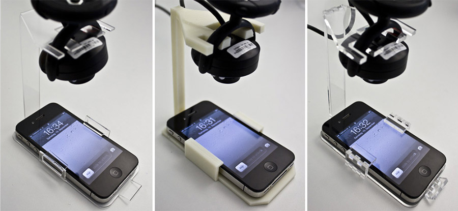
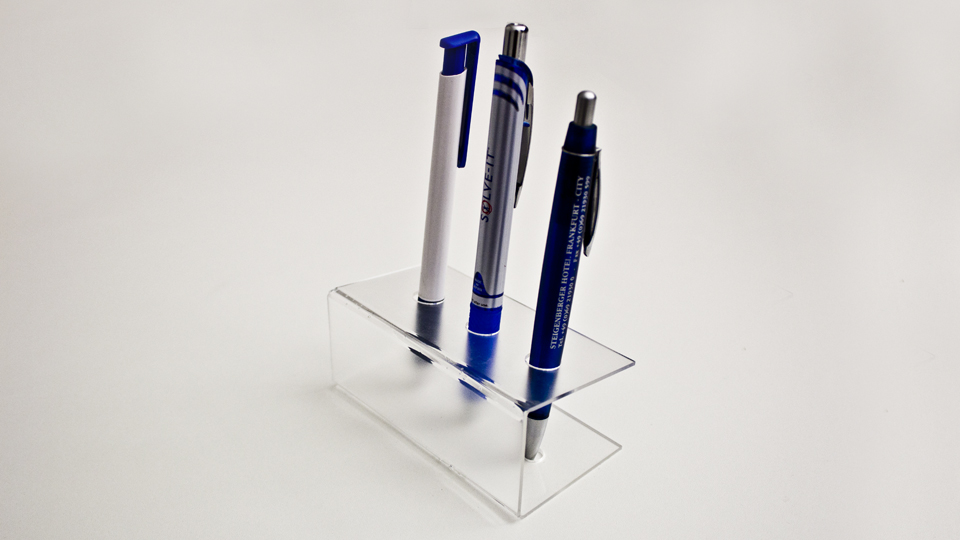
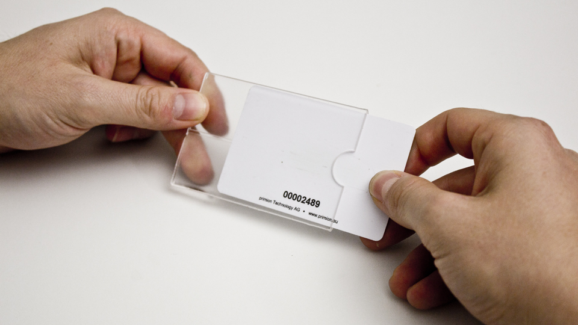
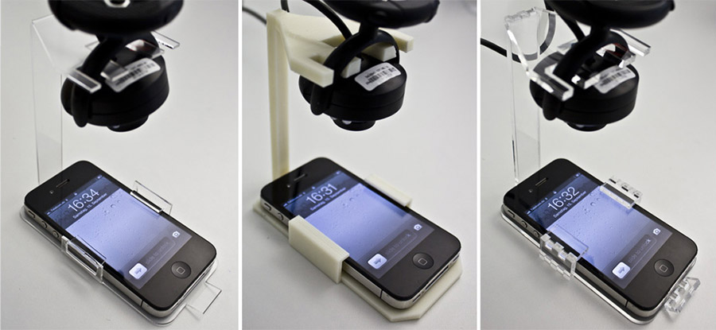
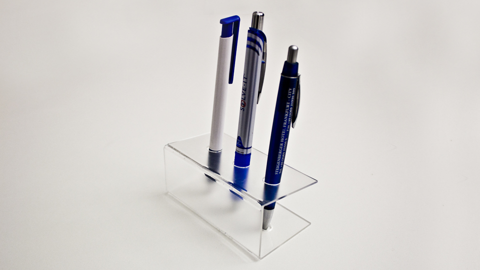
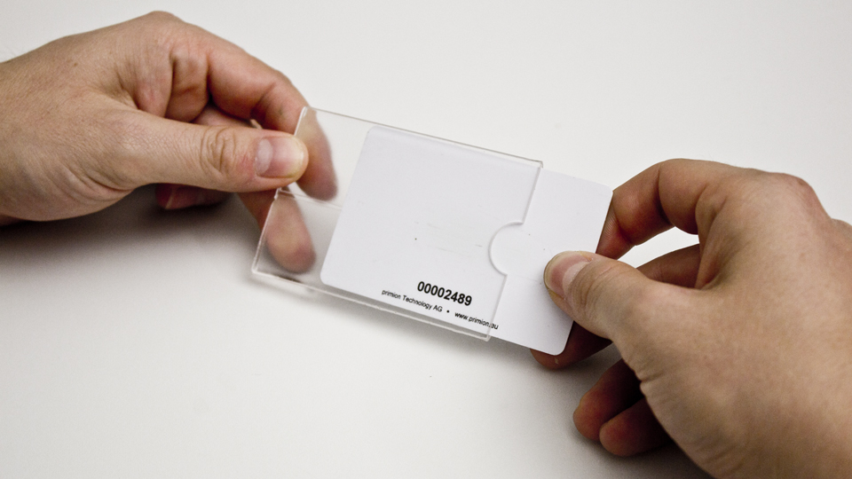
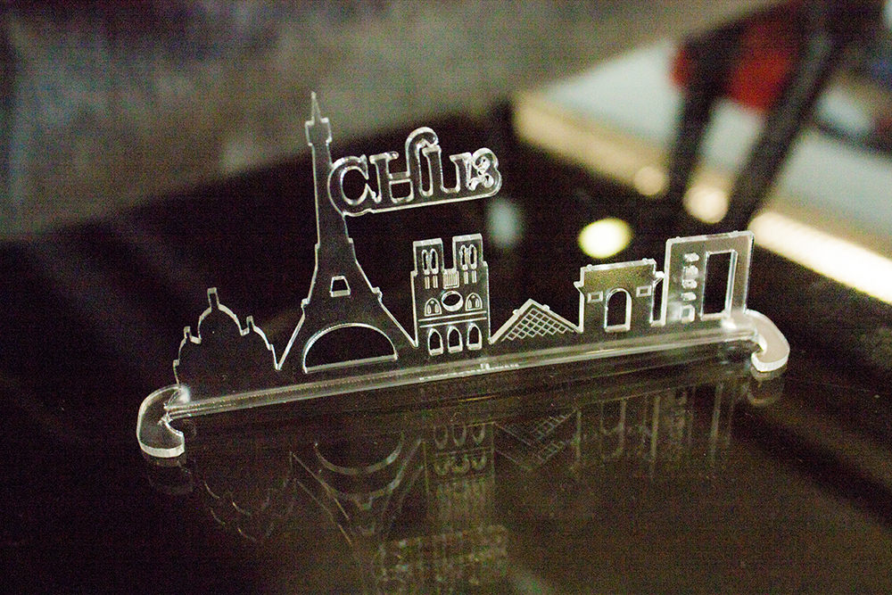
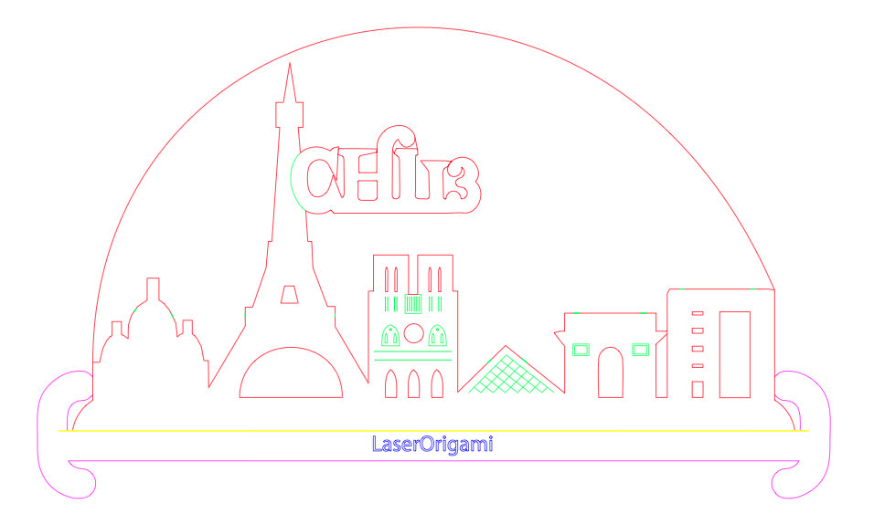

Publication
Mueller, S., Kruck, B., and Baudisch, P.
LaserOrigami: Laser-Cutting 3D Objects
In Proceedings of
CHI ’13
, pp. 2585-2592.
Best Paper Award, Demo at CHI'13
DOI
Paper
Video
Slides
Talk
Press
Video
Talk
Slides


LaserOrigami:
Laser-Cutting 3D Objects
 Figure 1: LaserOrigami fabricates 3D structure by bending, rather than using joints, thereby eliminating the need for manual assembly. Here it fabricates a mobile phone screen cam by (a) cutting the contour lines and (b) heating up the bend paths until the material becomes compliant and bends down under the influence of gravity. When the user retrieves the object, it is already assembled and (c) ready to be deployed.
We present LaserOrigami, a rapid prototyping system that produces 3D objects using a laser cutter. LaserOrigami is substantially faster than traditional 3D fabrication techniques such as 3D printing and unlike traditional laser cutting the resulting 3D objects require no manual assembly. The key idea behind LaserOrigami is that it achieves three-dimensionality by folding and stretching the workpiece, rather than by placing joints, thereby eliminating the need for manual assembly. LaserOrigami achieves this by heating up selected regions of the workpiece until they become compliant and bend down under the force of gravity. LaserOrigami administers the heat by defocusing the laser, which distributes the laser’s power across a larger surface. LaserOrigami implements cutting and bending in a single integrated process by automatically moving the cutting table up and down — when users take out the workpiece, it is already fully assembled. We present the three main design elements of LaserOrigami: the bend, the suspender, and the stretch, and demonstrate how to use them to fabricate a range of physical objects. Finally, we demonstrate an interactive fabrication version of LaserOrigami, a process in which user interaction and fabrication alternate step-by-step.

Figure 2: LaserOrigami fabricated the screen cam from Figure 1 in 3min compared to (b) the 240min the 3D printer required (Dimension Elite 3D printer). (c) Traditional laser cutting requires assembly.
Example Objects


Demo at CHI'13
Figure 1: LaserOrigami fabricates 3D structure by bending, rather than using joints, thereby eliminating the need for manual assembly. Here it fabricates a mobile phone screen cam by (a) cutting the contour lines and (b) heating up the bend paths until the material becomes compliant and bends down under the influence of gravity. When the user retrieves the object, it is already assembled and (c) ready to be deployed.
We present LaserOrigami, a rapid prototyping system that produces 3D objects using a laser cutter. LaserOrigami is substantially faster than traditional 3D fabrication techniques such as 3D printing and unlike traditional laser cutting the resulting 3D objects require no manual assembly. The key idea behind LaserOrigami is that it achieves three-dimensionality by folding and stretching the workpiece, rather than by placing joints, thereby eliminating the need for manual assembly. LaserOrigami achieves this by heating up selected regions of the workpiece until they become compliant and bend down under the force of gravity. LaserOrigami administers the heat by defocusing the laser, which distributes the laser’s power across a larger surface. LaserOrigami implements cutting and bending in a single integrated process by automatically moving the cutting table up and down — when users take out the workpiece, it is already fully assembled. We present the three main design elements of LaserOrigami: the bend, the suspender, and the stretch, and demonstrate how to use them to fabricate a range of physical objects. Finally, we demonstrate an interactive fabrication version of LaserOrigami, a process in which user interaction and fabrication alternate step-by-step.

Figure 2: LaserOrigami fabricated the screen cam from Figure 1 in 3min compared to (b) the 240min the 3D printer required (Dimension Elite 3D printer). (c) Traditional laser cutting requires assembly.
Example Objects


Demo at CHI'13
Download Example File: laserOrigami-paris-outline-example.pdf  